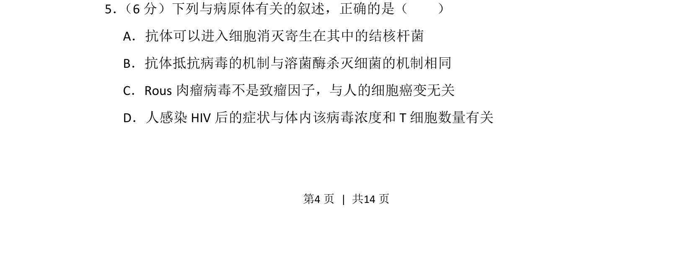
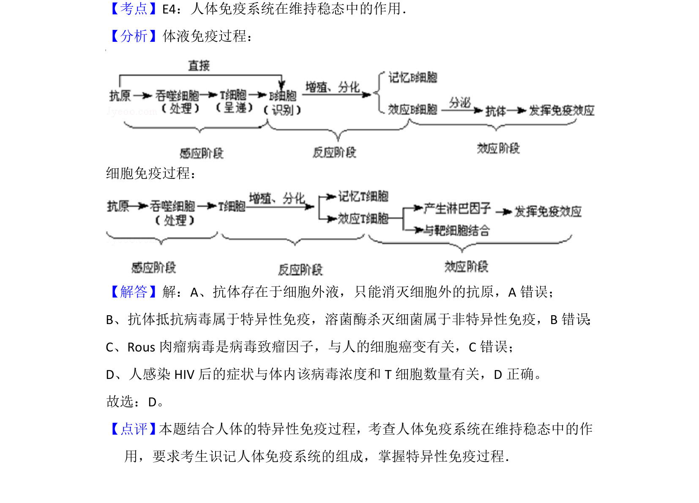

考点：免疫调节 病毒致癌因子 HIV 致病机制
免疫调节
病毒致癌因子
HIV 致病机制

该题考查免疫调节、病毒致癌及 HIV 致病机理等病原体相关生物学知识。

📄 原 PDF 第 4 页：素材/真题/吉林/2008-2024·（吉林）生物高考真题/2015年高考生物试卷（新课标Ⅱ）（解析卷）.pdf
素材/真题/吉林/2008-2024·（吉林）生物高考真题/2015年高考生物试卷（新课标Ⅱ）（解析卷）.pdf